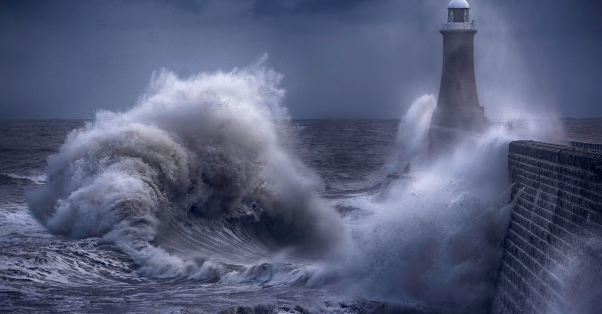
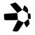

| 側 | 材料 | 位置づけ |
|---|---|---|
| 強気 | 週足終値が $82,814 を2週連続維持。週中の押し安値（$82,900〜83,200）もライン上で反発 | 「7月安値＝底」説の残る留保が形式上外れた |
| 強気 | ETF 週間 +$2.4B（2026年最大）・年初来フローが黒字転換・大手企業の買い再開 | 機関マネーの本格回帰。先週の「+$6.1M でかろうじて反転」から一段進行 |
| 弱気 | 10年金利 5.23%（2007年以来）・ドル高・金 $4,200 割れ（月間 −6.4%） | すべてのリスク資産の重し。警報器①点灯 |
| 弱気 | 信用スプレッドが 2.66% → 2.80% へ3営業日で反転上昇 | 「金利ショックであって信用ショックではない」の砦に初動のヒビ（点灯はまだ） |
| 中立 | 原油 $95.86 へ減衰も、海峡をめぐる交渉決裂で本日 +3.7% 反発 | 「原油高 → インフレ → 金利高」の循環は繋がったまま |
今週の一行: 「週足判定は2週連続で合格した。しかし金利がすべてを殴り始め、今朝そのラインを再テストしている」。
先週のレポートで「残る留保」とした 9/27（日）の週足終値。結果は合格でした。そして週明けの今朝、新しい試験が始まりました。
今週のマクロは一言で「割引率ショック」。強い経済指標と原油高で追加利上げ観測（10月 FOMC で約67〜70%）が強まり、長期金利が19年ぶりの水準へ駆け上がりました。

黒い縦線が先週の位置、色付きバーが今週の位置です。先週の「4つ同時に緩んだ」から一転、今週は締まる方向に全部が動いた週でした。
講師が定点観測している外部リサーチ（隔週レポート）の次号は、想定より遅れて本日時点で未公開です（通常の間隔から約1週間超過）。前号（判定ウィンドウを宣言した号）の枠組みだけ、現実との突合を更新します。
| 前号の枠組み | 今週までの実際 | 評価 |
|---|---|---|
| 重要サポートが CPI・FOMC を耐えれば「7月安値＝底」が確定 | 利上げ通過後も週足終値が2週連続でライン上 | 肯定側の証拠がさらに1週分 |
| 「50週線への最初の突破試行は通常失敗する」 | 奪回2週目も維持（終値は50週線の約 +8%上） | 失敗フェーズは通過・定着へ移行中 |
| 「年内の追加利上げは生きている」（少数派の読み） | 10月 FOMC の利上げ確率が約67〜70%まで上昇 | さらに的中方向 |
| Q4 は金がビットコインに優位（リスクオフ想定） | 今週は金 $4,200 割れ vs BTC 週足プラス圏と逆 | 短期は逆行・評価は次号待ち |
次号が公開され次第、「底値判定ウィンドウの総括」を中心に、来週のレポートでお届けします。
+20% 超は先週の21件から11件へ。しかも今週の上位5本は、BTC が −2〜3% と軟調な中での急騰 — つまり全て市場連動ではない「固有材料」型です。テーマは明確で、5本中4本が「伝統金融（TradFi）への接続」でした。

QNT+207%要因: 米大手25行が参加するトークン化預金の決済ネットワークの技術基盤に採用と報道（9/24-25）。日次 $2兆超を処理する米決済中核とつながる構造的な材料です。
見方: 材料は本物・価格は過熱 発表は「銀行がトークンを購入する」とまでは言っておらず、出来高の大半に見せかけ取引の指摘も。$200 超は投機主導の疑いが濃い局面です。
要因: 高利回りステーキング（10/1 終了）＋報酬プール（10/2 終了）の駆け込みと 9/25 のアップグレード。週内に −34% の急落を挟む超高ボラです。
見方: 最警戒の教材 上位10アドレスが供給の99%を保有し、需要の柱が今週剥落します。「イベント前の急騰は追わない」の典型例として観察します。
要因: IBM のクラウドカタログに Hedera 基盤の ID 基盤が掲載（初の商用エンタープライズアプリ）＋現物 ETF への継続流入＋大手取引所 CEO の言及（9/26）。
見方: 土台は持続・単日急騰は過熱 全面安の日に +18% は投機成分込み。$0.11 を維持できるかが分水嶺です。
要因: Nasdaq の株式データ配信の外部認可（9/22・公式発表）＋競合オラクルの撤退でシェアの受け皿に。データ事業の売上は月次 +22% 成長の実体があります。
見方: 材料は持続型 移行特需の話題は消化済みで直近は利確優勢。$0.084 のレジスタンス突破が次の観察点です。
要因: 同チェーン上で決済を担う企業の大型資金調達（9/24）が「ウォール街チェーン」の物語を再点火。30日手数料 $49M という実収益もあります。
見方: 実利用と未証明の混合 手数料は本物ですが、トークンの発行量が焼却量を上回る構造は未解決。$0.13 の維持が分水嶺です。
| 銘柄 | イベント | 先週 | 今週 | 形 |
|---|---|---|---|---|
| BTW | 報酬終了（10/1・10/2） | $0.857 | $1.37（+60%） | 終了直前に駆け込み急騰 — 剥落エネルギーは前回（−12.7%）以上に蓄積 |
| VVV | 発行削減の実施（10/1） | $32.80 | $27.63（−16%) | 好材料を待たずに先行剥落 — 「織り込み済み」パターン |
| ENA | 投資家分の一括解除（10/5） | $0.226 | $0.258（+14%） | 解除5日前に高値持ち — 需給的に最も危うい形 |
| 銘柄 | 先週 | 今週 | 状況 |
|---|---|---|---|
| LDO | $0.45 | $0.455 | 9/25 に「蓋」（$0.4647〜0.4688）を一度突破し高値 $0.49 → 本日反落で蓋の下へ。「突破後のリテスト」局面で、$0.4647 の奪回可否が次の答え合わせ |
| ETH | $2,713 | $2,639（−2.7%） | 週中 $2,800 タッチも上値止まり |
| HYPE | $95.35 | $89.08（−6.4%） | 最高値更新が一服（ATH $97.96 から −9%）。次の目安 $124 は遠のく |
| ZEC | $1,532 | $1,542（+0.7%） | 高値圏の持ち合いで相対的に最も堅い。「選別の中の選別」へ |
アルトシーズン指数は 47 → 59 へ3週続伸（75 超で「アルトシーズン」判定）。※ 個別銘柄の記載は市場観察の記録であり、売買をすすめるものではありません。